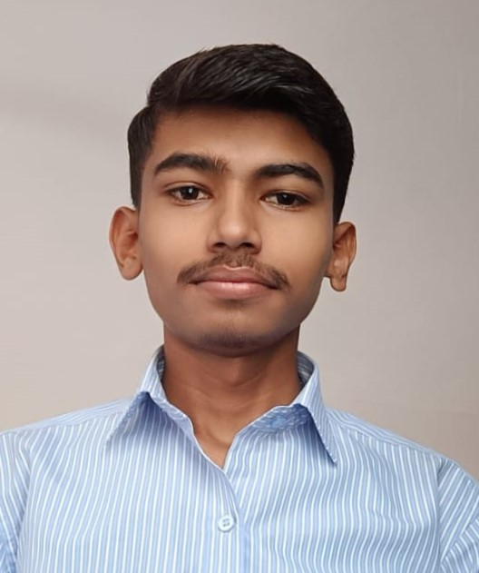

Sachin Bandu Kadam

Summary
I am very harworking , dedicated and antuziastic towords the any works.Entry level position in technical commpany.
Passionate about learning new technology and
ability to handle to work pressure.I have techincal skill and fast learner with intent communucation skills which will help orgnization to build well product.
Education
- Bachelor of Engineering in Computer science from Pimpri Chinchwad college of engineering ,pune
- HSC 86% (from Vivekanand jr. college Eklara)
- SSC 83% (from Vivekanand Vidhyalaya Eklara)
work Experience
- Intership in INFOSIS
June 2024 - Sept 2024
- I had some project which given by company.
- I work with there empolyee and grap experiance from them
- I design some Website also work on backend (like .. Infosis program ,etc. )
Skill's
- Programming Language
- C,C++
- Java
- Full Stack Web Developer
- HTML
- CSS
- XML
- JAVA Script
- Complete MERN
Certification
- Infosis 3 month Intership
- Full Stact Web Developer
Other